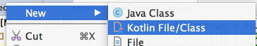

Kotlin is a powerful, concise and expressive language crafted by JetBrains.
&productName; supports it out-of-the-box.
To create a Kotlin file, right-click the target folder, and choose the corresponding option on the New menu:
